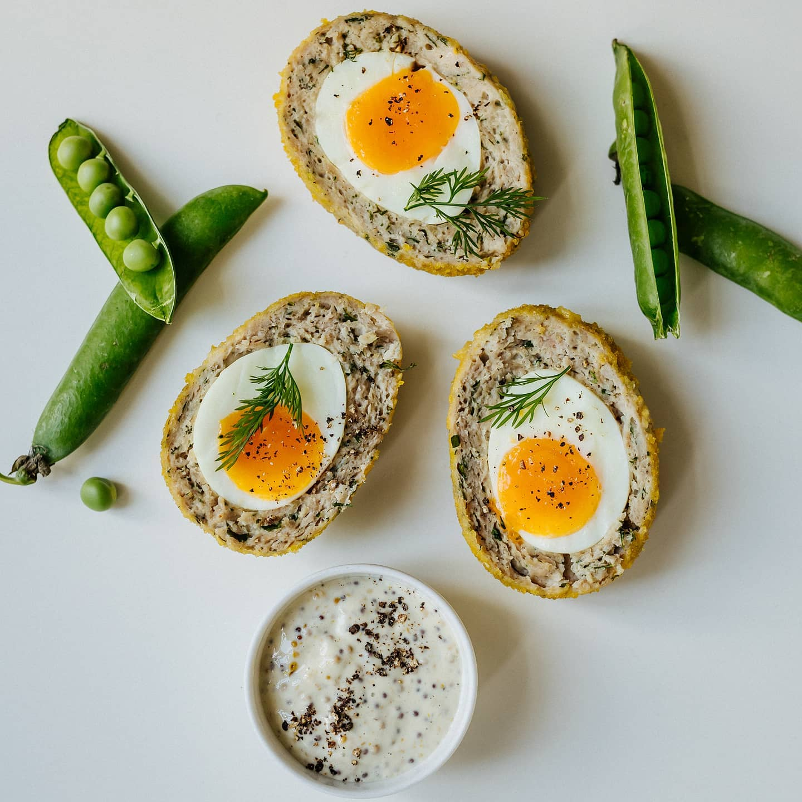

Mleté mäso podľa @prozenycz — Normy Jedál
Skotská vejce jsou noční můrou kuchařů i dietářů, ale my je prostě milujeme. 😁 a taky víme, jak je udělat lehčí, zdravější a chutnější!
Odkaz na recept nafocený přehledně krok za krokem najdete v biu.👉
📷 @efa_malus_foto
🍽️ @katerina.bicikova
🌸🌸🌸🌸
🌸🌸🌸
🌸🌸
🌸
#skotskavejce #pstrosivejce #vejce #vajicka #scotcheggs #karbanatky #chickenscotcheggs #bakedscotcheggs #kurecimaso #mletemaso #mincedmeat #jaro #spring #karbose #dnesjim #dnesjem #dnesvarim #prozeny #prozenycz #recepty_prozenycz